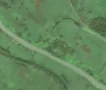
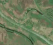

2,5 ha de pădure schimbată lângă Fântâna Dulce
Între vara lui 2025 și 26 aprilie 2026, pe aproximativ 2,5 ha de pădure din comuna Maliuc, lângă Fântâna Dulce, județul Tulcea, imaginile Sentinel-2 arată că vegetația a dispărut sau s-a schimbat puternic. Nu pare o tăiere de lemn.
Autorizația de tăiere
nu e tăiere de pădure
Schimbarea nu pare tăiere de lemn, așa că autorizațiile de tăiere nu se aplică. Zona nu era pădure nici înainte: livadă, vie, tufăriș, construcții sau carieră.
Ce se vede în poze: Zona marcată este în Delta Dunării, într-o mlaștină cu stuf și pajiști, iar în poza detaliată se vede doar un mic pâlc de copaci lângă un canal. În «după» nu se văd margini drepte sau pământ gol de tăiere, ci doar culori mai maronii, ca în restul mlaștinii, deci pare o schimbare de vegetație sau de nivel al apei.


Înainte și după: Copernicus Sentinel-2, 10 m pe pixel, conturul zonei cu portocaliu. Poza detaliată (Esri World Imagery) e de acum 1–4 ani: arată ce era acolo înainte, nu tăierea.
Pe scurt
- Identificator
- 20260426_45225_29155
- Locul
- Fântâna Dulce, comuna Maliuc, județul Tulcea (SIRUTA 160779)
- Coordonate (centru)
- 45.22455, 29.15491 · Google Maps · OpenStreetMap
- Suprafața
- 2,5 ha (din pixeli de 10 m; ± câțiva pixeli pe margine)
- Pădurea întreagă
- în vara lui 2025 (de atunci, nori sau iarnă)
- Prima imagine cu schimbarea
- 26 aprilie 2026
- S-a lărgit
- 6 mai 2026
- Imagini în care se vede schimbarea
- 5
- Cât de sigur e semnalul din satelit
- scăzută
- Terenul
- în afara amenajamentelor silvice publicate (pășune, mal de apă sau pădure privată fără amenajament în registru)
- Arie protejată
- Delta Dunării, Delta Dunării și Complexul Razim - Sinoie
- Garda Forestieră
- Focșani
Dacă vrei să verifici sau să sesizezi
- Pădurile din județul Tulcea sunt în grija Gărzii Forestiere Focșani, care controlează tăierile și dă amenzile.
- Formularul Gărzii Forestiere Naționale primește sesizări și fără nume. Trimite linkul acestei pagini, coordonatele și pozele. Dacă tăierea e în desfășurare, sună la 112.
- Autorizațiile și transporturile de lemn se pot căuta în Inspectorul Pădurii.
Pagina arată ce se vede din satelit și ce scrie în registrul public; nu e o dovadă în sine.
Cum citezi zona
Linkul acestei pagini nu se schimbă. Dacă zona iese vreodată de pe hartă, pagina rămâne, cu data și cu ce știam despre ea.
Pădurea RO, zona 20260426_45225_29155: 2,5 ha, Fântâna Dulce, comuna Maliuc, județul Tulcea; schimbare văzută din satelit între vara lui 2025 și 26 aprilie 2026. https://iliemihai.github.io/padurea-ro/zona/20260426_45225_29155/ (consultat la [data]). Date: CC BY 4.0.
Datele zonei: GeoJSON · toate zonele: date deschise · licența CC BY 4.0.
Istoricul zonei pe hartă
Starea se poate schimba când registrul publică o autorizație sau când analistul vede poze mai bune. O ținem aici, ca un link citat să arate și ce spuneam atunci.
Pe hartă cel târziu din 5 noiembrie 2026.
- 5 noiembrie 2026 – azi · nu e tăiere de pădure
Detalii tehnice, pentru verificare
De ce acest nivel de încredere:
- văzută schimbată în 5 imagini diferite
- pădurea din jur e neschimbată
- ultima dată am văzut-o intactă în vara lui 2025 (de atunci, nori sau zăpadă)
- fără părerea AI
Ce a văzut analistul cu context: În poza detaliată din 2018 zona conține un grup mic de coroane lângă un braț al râului, înconjurat de stuf și pajiște. Nu e pădure închisă, iar în 78% din jur este mlaștină. În Sentinel-2 «după» textura și tonul sunt aceleași ca în vegetația din jur, fără margini ascuțite sau drumuri de colectare. Nu există autorizație de tăiere, iar zona e în arie protejată, ceea ce nu susține ipoteza tăierii rase.
- Placa Sentinel-2
- 35TPL
- NDVI de referință
- 0.83
- NBR de referință
- 0.62
- Scăderea în pădurea din jur
- 0.03
- Persistență
- 1.0
- NDVI / NBR după
- 0.42 / 0.135
- Analistul cu context (model)
- altceva · 0.55
Cum se calculează fiecare: metodologia.
Pune harta zonei într-un articol
Copiază codul în articol (merge în majoritatea site-urilor de știri). Sau pune doar linkul: WhatsApp, Facebook și X arată singure poza zonei.